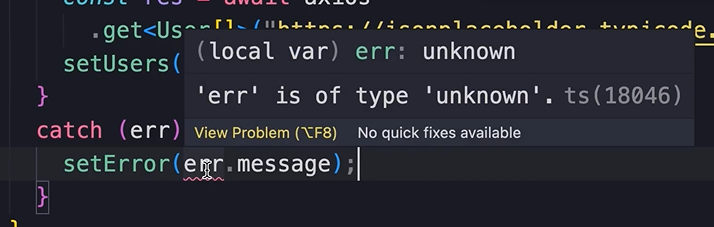

HOME
Working with Async and Await
Topic im talking about
Some people don't like then and catch methods like this...
So we should learn how to write this code in a more linear way, using
async/await.
I wanna go ahead and say though, I do NOT favor the async/await
approach. You'll see why.
Explanation
So we should understand that the get method returns a promise...
If this promise is resolved we get a response obj...
And if something goes wrong we get an err...
So let's see how we can re-write this code without
then/catch...
In JS, if we have a promise, we can put the await keyword infront of
the promise to get the result. The response.
But we get an err...
So to use the await keyword, we need the async keyword here...
But we have ANOTHER err.
üò°üí° This is because react doesn't allow us to pass an async function
to the effect hook!
To work around this, we need to define an async function inside the
effect, then move our await code into that async function.
So, we await the promise, we get a response, then we call setUsers and
pass the response data...
 Then right after defining the async function, we call it...
Then right after defining the async function, we call it...
So thats the happy path if everything goes good, but how do we handle
the errors?
Well, we just use a try/catch inside the async function...
But yet another err...

The Typescript compiler can't tell the type of the err object.
The problem is that we can't annotate it here...
 Type annotation is not available in a catch clause
Type annotation is not available in a catch clause
To work around this we have to wrap the err obj in braces, then use
the 'as' keyword to tell Typescript the type of this object.
So import this...
Then use the as keyword to define the type...
Async and await with a try catch block is great!!... For alot of
things, but I have to admit that this way of using it with the effect
hook in react is absolutely horrible.
üí©üêûüêûüêûüò£ü§¨üòí
Just look at the difference!!
I think it's needless to say that going forward I will be using the
then/catch approach in the rest of this course.